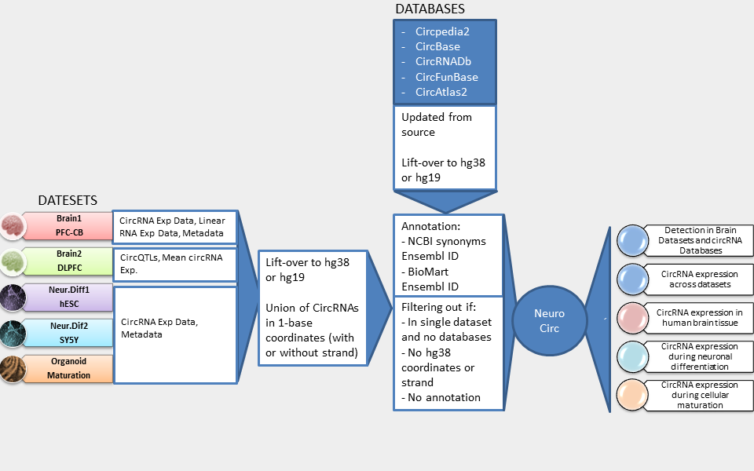

Welcome to NeuroCirc
Developed by Voineagu Lab.
26 136 annotated circrnas
Circular RNAs (circRNAs) (Chen 2016) are RNA molecules formed by back-splicing of exon-exon junctions. While the existence of circRNAs has been known for several decades, their study has been catalyzed in recent years by wide-spread application of RNA-sequencing.
Brain region and maturation metadata
NeuroCirc includes the union of circRNAs detected in two large-scale studies of the human brain (Gokool et al, 197 samples; Liu et al), two neuronal differentiation datasets (human ESC differentiation to forebrain neurons; differentiation of neuroblastoma cells, and a dataset of cellular maturation in brain organoids (RNA-seq data generated by Sloan et al, circRNA quantification carried out in Gokool et al.).
Crosslinked to 3 leading databases
Five databases are included in NeuroCirc (CircBase, CIRCpedia2, circRNADb, CircFunBase, circAtlas2), specifically when they overlap with at least one dataset. Database information merged with this unique set includes presence/absence and individual URLs.
Our Update Workflow
NeuroCirc contains five datasets and their metadata, spanning multiple brain regions and types of studies. Specifically, a study that generates expression matrices and sample metadata can be represented using box/scatter plots and compared using z-scores, whereas QTL studies can be displayed as tables.
